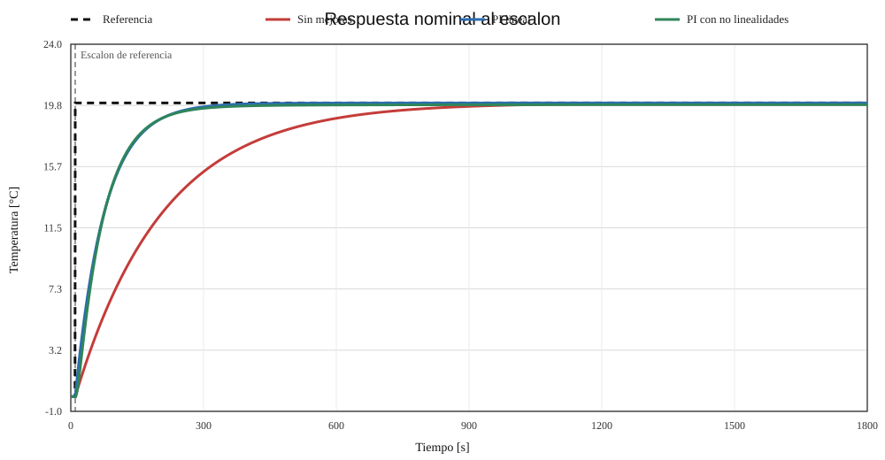
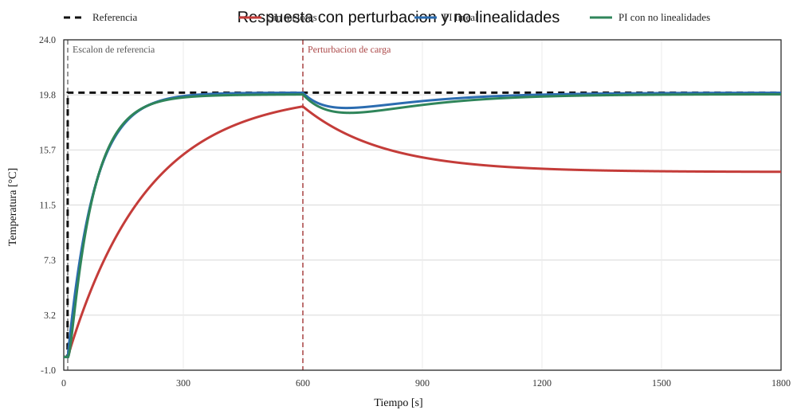
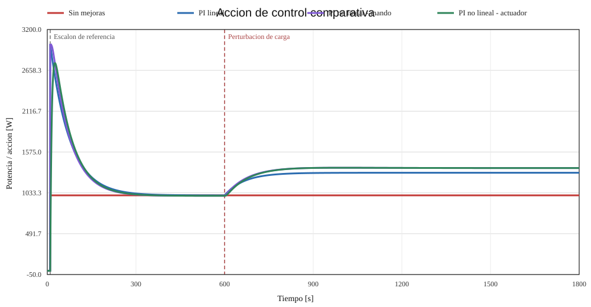

La yerba mate constituye una de las producciones agroindustriales más representativas del noreste argentino, con fuerte concentración en la provincia de Misiones y, en menor medida, en el nordeste de Corrientes. Su elaboración industrial comprende una secuencia de etapas que transforma la hoja verde cosechada en un producto estable y apto para su posterior canchado, estacionamiento, molienda y envasado. Entre dichas etapas, el sapecado y el secado resultan determinantes, ya que permiten disminuir el contenido de agua del material vegetal y detener los procesos biológicos que degradarían el producto.
A continuacion se describe cada uno de estos procesos nombrados:
Conociendo estas diferencias, es necesario comprender el flujo de trabajo en un secadero de Yerba Mate: una vez arribada la materia prima al establecimiento se procede a realizar el sapecado, posterior a esto la yerba mate ingresa al proceso de secado, donde mediante aire caliente se elimina gran parte de la humedad remanente. En secaderos continuos, este proceso suele realizarse mediante cintas transportadoras, sobre las cuales el material vegetal avanza mientras recibe el efecto del flujo de aire caliente. El objetivo tecnológico es reducir la humedad del producto hasta valores compatibles con su conservación y procesamiento posterior; en el siguiente articulo [1] se ubica esta reducción, según el criterio considerado, en torno al 4–6 % respecto del peso verde original o bien en valores finales de humedad regulados para la yerba canchada.
Desde el punto de vista de la teoría de control, el secadero puede interpretarse como una planta térmica con transporte de materia, en la que existe una variable de proceso que debe mantenerse dentro de un rango adecuado para asegurar la calidad del producto y la eficiencia energética del sistema. Entre las magnitudes potencialmente controlables se encuentran la temperatura del aire de secado, la humedad final del producto, el caudal de aire caliente y la velocidad de avance de la cinta. Para el presente trabajo se selecciona como variable principal de control la temperatura del aire en la cámara de secado, por tratarse de una variable físicamente relevante, medible en forma continua y directamente vinculada con la evolución térmica del proceso. Esta elección, además, permite formular un modelo de planta razonable y abordar el diseño de un controlador con las herramientas clásicas de la asignatura.
El sistema considerado corresponde a un secadero continuo a cinta. Su funcionamiento puede describirse del siguiente modo: la yerba previamente cosechada y sapecada ingresa al secadero y es distribuida sobre una cinta transportadora. Mientras avanza, el material vegetal es sometido a una corriente de aire caliente generada por un sistema térmico, típicamente asociado a una cámara de combustión e intercambio de calor. La transferencia de energía desde el aire al producto promueve la evaporación de la humedad contenida en las hojas y ramas finas. La permanencia del material dentro del secadero, junto con la temperatura del aire y el régimen de circulación, determinan el grado de secado alcanzado a la salida.
En términos de control automático, el sistema opera bajo la lógica clásica de lazo cerrado. Se fija una temperatura de referencia para el aire de secado; un sensor mide la temperatura real dentro de la cámara; esa medición se acondiciona y se compara con la consigna; el error resultante alimenta a un controlador; y el controlador actúa sobre el elemento final de control, modificando la potencia térmica suministrada al secadero. De esta forma, el sistema intenta rechazar perturbaciones y mantener la temperatura del proceso cercana al valor deseado.
En este trabajo se busca controlar la temperatura del aire de secado en el interior del secadero.
La elección de esta variable responde a razones técnicas y metodológicas. En primer lugar, la temperatura del aire influye de manera directa sobre la transferencia de calor al producto y, por ende, sobre la rapidez con la que se elimina la humedad. En segundo lugar, se trata de una variable que puede medirse en línea mediante instrumentación industrial estándar. Finalmente, su control es compatible con el uso de modelos dinámicos térmicos de complejidad moderada.
El objetivo del sistema de control será entonces mantener la temperatura del aire en torno a un valor de consigna previamente establecido, pese a la presencia de perturbaciones tales como cambios en la carga de yerba, variaciones de humedad inicial o fluctuaciones de las condiciones ambientales. Desde una perspectiva de ingeniería, esto persigue simultáneamente tres fines:
La variable de salida seleccionada, esto es, la temperatura del aire de secado, puede medirse mediante una termocupla industrial, preferentemente de tipo K por su amplio rango de operación y uso extendido en procesos térmicos. Las termocuplas generan una pequeña tensión termoeléctrica dependiente de la temperatura; ese principio de funcionamiento está basado en el efecto Seebeck (fenómeno termoeléctrico por el cual se genera una diferencia de potencial eléctrico cuando existe un gradiente de temperatura entre dos uniones de materiales conductores o semiconductores distintos, debido al movimiento de portadores de carga desde la zona caliente hacia la fría.). La fuente técnica consultada [2] destacan que este tipo de sensores produce señales de muy bajo nivel y que su comportamiento no es estrictamente lineal respecto de la temperatura.
Debido a ello, la medición requiere una etapa de acondicionamiento de señal. En una implementación industrial típica, la señal de la termocupla se ingresa a un transmisor de temperatura, cuya función es:
Para fines de modelado y simulación, se asumirá que el conjunto sensor + transmisor puede representarse, en primera aproximación, como un bloque de ganancia estática, o eventualmente como un sistema de primer orden si se desea contemplar la dinámica propia del elemento de medición. La salida acondicionada será la señal de realimentación que ingresará al comparador del lazo de control. A continuacion se puede observar el diagrama de bloques a modo de ejemplo correspondiente a esta parte del sistema:
flowchart LR Treal[Temperatura real T_t -°C-] Sensor[Termocupla] Acond[Transmisor / acondicionador T_m -°C / V-] Comp[Comparador del lazo] Treal --> Sensor --> Acond --> Comp
La acción de control se ejecutará actuando sobre la potencia térmica suministrada al secadero. Conceptualmente, esto puede implementarse mediante distintos dispositivos, según la arquitectura adoptada por la planta industrial:
Para este trabajo se considerará que la variable manipulada es la potencia térmica entregada al aire de secado, representada de manera simplificada por una señal de mando proveniente del controlador. En términos físicos, el actuador será el conjunto formado por el elemento final de control y el sistema generador de calor. Su misión será modificar la energía térmica ingresada al proceso para compensar desviaciones de temperatura respecto de la consigna.
A continuación se identifican las variables principales del sistema propuesto:
| Variable | Descripción | Unidad |
|---|---|---|
| Temperatura de referencia o consigna | ||
| Temperatura real del aire en la cámara de secado | ||
| Temperatura medida por el sistema sensor-acondicionador | ||
| Error de control | ||
| Señal de control aplicada al actuador | % | |
| Potencia térmica suministrada al secadero | kW | |
| Flujo másico de producto que ingresa al secadero | kg/s | |
| Humedad inicial del producto | % b.h. | |
| Humedad final del producto | % b.h. | |
| Temperatura ambiente | ||
| Caudal de aire de secado | m |
En el presente estudio, las variables definidas anteriormente se utilizarán como base para describir formalmente el sistema de control propuesto. En particular, se distinguirán aquellas asociadas directamente al objetivo de regulación, a la acción del controlador y a la medición empleada en la realimentación. De este modo, la formulación del problema y el desarrollo posterior del modelo matemático se apoyarán en las siguientes variables principales:
Todo sistema real de secado está sometido a perturbaciones que modifican su respuesta y pueden alejarlo del punto de operación deseado. En el caso del secadero de yerba mate, las perturbaciones más relevantes son las siguientes:
a) Variación de la humedad inicial de la materia prima. La yerba ingresada al secadero no presenta siempre el mismo contenido de agua. Un aumento de humedad implica mayor demanda energética para alcanzar el mismo grado de secado, lo que tiende a reducir la temperatura del aire si la potencia térmica no se ajusta adecuadamente.
b) Variación del caudal o de la masa de producto alimentado. Cambios en la cantidad de material sobre la cinta modifican la carga térmica del sistema. Una mayor masa de yerba absorbe más energía y altera la dinámica del proceso.
c) Variaciones de la temperatura ambiente. Las condiciones externas influyen sobre las pérdidas térmicas del secadero y sobre la temperatura inicial del aire de entrada.
d) Variaciones del flujo de aire caliente. Cambios en ventiladores, compuertas o pérdidas de carga alteran la convección y, por lo tanto, la transferencia de calor hacia el producto.
e) Variaciones en la fuente de calor. En secaderos basados en combustión, las fluctuaciones del combustible o del régimen de combustión pueden traducirse en cambios de potencia térmica efectiva.
Estas perturbaciones justifican la necesidad de emplear un sistema de control realimentado en lugar de una estrategia puramente manual o a lazo abierto.
El secadero de yerba mate no constituye una planta estrictamente lineal. Aun cuando en etapas posteriores del trabajo se adopte una aproximación lineal para su análisis y diseño, es importante reconocer las principales no linealidades físicas presentes en el sistema:
a) Relación no lineal entre la temperatura y la transferencia de calor. Los fenómenos de convección, radiación e intercambio térmico con el producto no evolucionan linealmente en todo el rango operativo.
b) Relación no lineal entre temperatura y evaporación de humedad. La cinética de secado del material vegetal depende de la temperatura, del contenido de humedad y de las condiciones de transporte de masa, por lo que la respuesta del sistema varía con el punto de operación.
c) No linealidad del sensor. Las termocuplas presentan una relación tensión-temperatura no perfectamente lineal, razón por la cual se requiere linealización en el acondicionamiento de señal.
d) Saturación del actuador. La potencia térmica disponible no puede aumentar indefinidamente; el actuador presenta límites físicos máximos y mínimos.
e) Dependencia de parámetros con la carga del proceso. La constante de tiempo térmica efectiva del secadero puede variar con la cantidad de yerba sobre la cinta, con el caudal de aire y con el estado de operación general.
En consecuencia, para el diseño del controlador será razonable trabajar con un modelo linealizado alrededor de un punto nominal de operación, dejando explícito que dicho modelo es una aproximación válida en un entorno de funcionamiento acotado.
Para el caso propuesto, puede adoptarse una normalización compatible con instrumentación industrial, que se especifican acontinuacion:
Señal de entrada o consigna: temperatura de referencia
Señal de salida medida: temperatura acondicionada
Señal de control: salida del controlador hacia el actuador, normalmente expresada como señal eléctrica o neumática
equivalente a un porcentaje de apertura, caudal o potencia. En este caso particular, la acción de control se vincula con la
potencia térmica suministrada al secadero, ya que esa es la magnitud manipulada que permite modificar la temperatura del aire
de secado. Por lo tanto, la señal de control puede interpretarse como una orden de mando enviada al sistema generador de calor,
indicando cuánto debe aumentar o disminuir la energía térmica entregada al proceso. Para mantener coherencia con la tabla de
variables adoptada en el informe, esta señal puede considerarse expresada en porcentaje de actuación, mientras que su efecto
físico se manifiesta en la variación de la potencia térmica
En función de lo expuesto, se desea diseñar un sistema de control automático para regular la temperatura del aire en un secadero continuo a cinta de yerba mate, de modo que dicha temperatura siga una consigna preestablecida con adecuado rechazo a perturbaciones, garantizando condiciones apropiadas para el secado del producto.
El siguiente diagrama de bloques representa los elementos principales del lazo de control: sensor y acondicionador, comparador, controlador, actuador, planta (secadero) y las perturbaciones externas. En las conexiones se indican la variable física y su unidad.
flowchart TD Tref[( Consigna )] Ts[Termocupla] Tm[Transmisor] Comp[Comparador] Ctrl[Controlador] Act[Generador de calor] Plant[Secadero] Tamb((Perturbaciones)) Tref -- [°C] --> Comp Ts --> Comp Comp --> Ctrl --> Act --> Plant Tamb --> Plant Plant --> Ts Ts --> Tm
A continuación se presenta una tabla que resume los bloques del sistema, su contenido y una breve descripción de cada uno:
| Nombre Bloque | Contenido | Descripcion |
|---|---|---|
| Consigna | ||
| Transmisor | $T_m$: Temperatura medida | |
| Comparador | ||
| Controlador | ||
| Generador de calor | ||
| Secadero | ||
| Perturbaciones |
Se proponen modelos razonables (teóricos/experimentales) de orden bajo para cada bloque. Estas aproximaciones son comunes en modelado térmico y facilitan el diseño de controladores. El criterio adoptado es representar cada subsistema mediante una dinámica suficientemente simple como para permitir el análisis en el dominio del tiempo y de Laplace, pero conservando los efectos físicos más relevantes del proceso: la inercia térmica del secadero, la dinámica del sistema de medición y la respuesta del elemento actuador que regula el aporte de calor. Dado que el objetivo principal del trabajo es estudiar el comportamiento del lazo de control alrededor de un punto nominal de operación, se considera apropiado utilizar modelos linealizados de orden bajo.
Desde esta perspectiva, el sistema completo puede interpretarse como la interconexión de tres bloques dinámicos principales. En primer lugar, la planta térmica, que describe cómo la potencia térmica suministrada se traduce en una variación de la temperatura del aire en la cámara. En segundo lugar, el conjunto sensor + acondicionador, que transforma la temperatura real del proceso en una señal utilizable para la realimentación. Finalmente, el actuador, que representa la forma en que la señal de control del regulador modifica efectivamente la potencia entregada al secadero. La presencia de perturbaciones, como la humedad inicial del producto, la variación de masa alimentada o la temperatura ambiente, se incorpora como una entrada externa adicional que altera el balance térmico de la planta.
| Elemento | Modelo sugerido | Comentarios |
|---|---|---|
| Sensor + Acondicionador | Si el transmisor introduce dinámica usar primer orden. | |
| Actuador (generador de calor) | Saturación: | |
| Planta térmica (secadero) | Modelo linealizado alrededor del punto de operación. |
Considerando un balance de energía linealizado alrededor del punto de operación, la dinámica de la temperatura del aire en la cámara se puede aproximar por:
donde
Este modelo resume la idea física de que el secadero no responde de manera instantánea frente a cambios en la potencia de calentamiento. La temperatura del aire evoluciona con una determinada inercia térmica, asociada a la capacidad calorífica del sistema, a las pérdidas hacia el entorno y al intercambio de calor con el producto transportado por la cinta. Por esa razón, una representación de primer orden resulta razonable como aproximación inicial, especialmente cuando el análisis se realiza en torno a un régimen operativo relativamente acotado.
La inclusión del término de perturbación
En Laplace:
Para el presente trabajo se adoptará un modelo de ganancia, ya que la dinámica del sensor y del transmisor es mucho más rápida que la dinámica térmica del secadero y, en consecuencia, su efecto puede considerarse despreciable dentro del nivel de aproximación utilizado:
No obstante, si se quisiera incorporar mayor detalle en la representación del sistema de medición, también podría emplearse un modelo de primer orden razonable:
La elección entre uno u otro modelo depende del nivel de detalle que se desee incorporar. En este informe se selecciona la aproximación por ganancia estática porque permite representar adecuadamente la medición sin complejizar innecesariamente el modelo. En cambio, si se deseara contemplar retardos de medición, filtrado o tiempos propios del transmisor, resultaría más apropiado introducir la dinámica de primer orden.
En ambos casos, la función del bloque es representar la conversión desde la temperatura real del proceso hacia la señal medida
El actuador (modulación de potencia) puede modelarse mediante un primer orden sujeto a saturación:
donde
Este bloque representa el conjunto formado por el elemento final de control y el sistema generador de calor. Su papel dentro del lazo es transformar la señal enviada por el controlador en una modificación efectiva de la potencia térmica disponible para el secado. La dinámica del actuador puede deberse, por ejemplo, a la apertura progresiva de una válvula de combustible, a la respuesta del sistema de combustión o al tiempo requerido para que el generador de calor modifique su régimen de operación.
La saturación introducida en la expresión anterior resulta físicamente necesaria, ya que la potencia no puede crecer ni decrecer sin límite. En términos de control, esta restricción es importante porque condiciona la respuesta ante grandes errores de temperatura y puede producir comportamientos no lineales cuando el actuador opera cerca de sus límites mínimos o máximos.
Para llevar los modelos a valores numéricos no debe asumirse que existe un único conjunto de parámetros válido para todos los secaderos de yerba mate, ya que dichos parámetros dependen del punto de operación, de la carga de producto, de las condiciones térmicas y del esquema constructivo particular de cada equipo. Por esta razón, en ingeniería de control se recomienda obtener modelos empíricos alrededor del régimen nominal mediante ensayos de paso o impulso y ajustar sus parámetros a partir de la respuesta temporal medida [3]. En el presente informe, los valores indicados a continuación se adoptan como un punto de partida para la simulación y el análisis del lazo de control. En particular, los parámetros de la planta se eligieron de manera compatible con el comportamiento lento reportado para secaderos continuos de yerba mate en la bibliografía técnica, mientras que los del sensor y del acondicionador se tomaron con dinámica mucho más rápida que la planta, de acuerdo con el criterio de modelado adoptado para instrumentación térmica [4] y [2].
Valores nominales adoptados como ejemplo inicial para simulación:
| Valores nominales |
|---|
Estos valores deben interpretarse como nominales y orientativos. En particular,
La validación y el ajuste del modelo constituyen la etapa en la que se verifica si la representación matemática propuesta describe con suficiente fidelidad el comportamiento real del secadero en el entorno del punto de operación seleccionado. Dado que el modelo adoptado para la planta es de primer orden y linealizado, su validez no debe asumirse a priori, sino comprobarse experimentalmente mediante ensayos controlados sobre la variable manipulada y observación de la respuesta de la variable controlada [3].
El procedimiento más apropiado para este tipo de sistema consiste en aplicar una prueba de escalón sobre el actuador, es decir,
introducir una variación conocida y acotada en la potencia térmica
A partir de la respuesta obtenida, el primer parámetro a identificar es la ganancia estática de la planta
donde
El segundo parámetro clave es la constante de tiempo
Una vez estimados
En caso de observar discrepancias importantes, corresponde ajustar los parámetros del modelo o revisar la estructura elegida.
Por ejemplo, si el valor final coincide pero la respuesta calculada es demasiado rápida o demasiado lenta, el parámetro que
debe corregirse prioritariamente es
También resulta técnicamente conveniente repetir el ensayo con distintas amplitudes de escalón y, si es posible, bajo distintas condiciones de carga o humedad del producto. Esto permite evaluar el rango de validez del modelo linealizado y verificar si los parámetros identificados permanecen aproximadamente constantes o si varían de manera significativa con el punto de operación. Si la variación es pequeña, el modelo nominal puede considerarse adecuado para diseño inicial. Si la variación es grande, deberá dejarse explícito que el modelo solo es válido localmente.
En el caso del sensor y del acondicionador, la validación puede realizarse de forma más sencilla, ya que en este informe se ha
optado por representarlos mediante una ganancia estática. Esa decisión se justifica si la dinámica de medición es mucho más
rápida que la de la planta térmica y no introduce retardos apreciables en la escala temporal del secadero. Si en una futura
implementación experimental se observara un retardo de medición relevante o una respuesta filtrada que afecte el lazo, entonces
sería razonable reemplazar ese bloque por el modelo de primer orden propuesto para
De manera análoga, el bloque actuador puede validarse comprobando que la relación entre la señal de control
Para el modelo de planta de primer orden propuesto:
El denominador de la planta en lazo abierto es
Dado que en una planta térmica físicamente realizable se cumple
Ahora bien, como en el presente informe la estrategia de control seleccionada es un controlador PI, la estabilidad de lazo cerrado debe analizarse con esa estructura y no con un controlador puramente proporcional. Si se adopta:
la ecuación característica del sistema realimentado viene dada por:
Reemplazando la planta y el controlador:
de donde se obtiene:
Se trata de un polinomio característico de segundo orden. Para este caso, una condición suficiente y necesaria de estabilidad es que todos sus coeficientes sean positivos. En el modelo adoptado eso ocurre si:
Estas condiciones son coherentes con la interpretación física del sistema: la planta posee inercia térmica positiva, la potencia térmica incrementa la temperatura del aire y el controlador PI actúa con ganancias positivas para corregir el error. En consecuencia, dentro del modelo nominal propuesto, el sistema en lazo cerrado con controlador PI también resulta estable.
Dado que la estructura de control adoptada en el trabajo es un controlador PI, la respuesta temporal debe analizarse a partir del sistema realimentado de segundo orden equivalente. Con:
la función de transferencia de lazo cerrado entre la consigna y la salida queda:
Por lo tanto, ante un escalón de consigna, la evolución temporal de la temperatura ya no responde exactamente a la forma exponencial simple de un primer orden puro, sino a una dinámica de segundo orden cuyas características dependen de la posición de los polos de lazo cerrado.
Comparando el denominador con el polinomio canónico de segundo orden:
pueden identificarse parámetros equivalentes de amortiguamiento y frecuencia natural mediante:
Esta representación permite relacionar directamente la elección de
En el caso específico del secadero, donde se busca error estacionario nulo frente a cambios escalón de consigna y una respuesta sin sobrepasamientos excesivos, el controlador PI permite alcanzar un compromiso adecuado entre rapidez y amortiguamiento. Por eso, en las secciones siguientes las especificaciones de diseño y las simulaciones se formularán sobre la base de esta dinámica de segundo orden en lazo cerrado.
La verificación del modelo a partir de la respuesta temporal constituye una aplicación práctica de la metodología de validación desarrollada en la sección anterior. En este punto, el objetivo ya no es volver a describir en detalle todo el procedimiento experimental, sino comprobar que los parámetros nominales adoptados para la planta reproducen adecuadamente la evolución temporal del secadero ante excitaciones compatibles con su operación normal.
Para ello, se considera una prueba de escalón sobre la variable manipulada y se compara la respuesta térmica medida con la que predice el modelo de primer orden propuesto. A partir de esa comparación pueden obtenerse estimaciones experimentales de la ganancia estática y de la constante de tiempo:
Si los valores obtenidos resultan próximos a los parámetros nominales
La verificación se completa repitiendo el análisis con escalones de distinta amplitud, a fin de comprobar si el comportamiento permanece aproximadamente lineal en el intervalo operativo de interés. Este paso es importante porque el modelo adoptado es linealizado y, por lo tanto, su validez debe entenderse como local respecto del punto nominal seleccionado.
La noción de tipo de sistema se vincula con la cantidad de integradores puros presentes en la función de transferencia de lazo abierto y permite anticipar el comportamiento del error en estado estacionario frente a entradas de referencia estándar.
En primer lugar, la planta del secadero por sí sola está dada por:
Esta función no posee polos en el origen, por lo que la planta es de tipo 0. Desde el punto de vista práctico, esto significa que, si se utilizara únicamente un controlador proporcional, el sistema presentaría un error estacionario distinto de cero ante una entrada escalón de consigna.
Sin embargo, en este trabajo se adopta un controlador PI de la forma:
La presencia del término
Dado que en este trabajo se adopta un controlador PI, el análisis de polos dominantes debe realizarse directamente sobre la ecuación característica del lazo cerrado correspondiente a esa estructura. Para:
la función característica del sistema resulta:
que corresponde a un sistema de segundo orden. Sus polos de lazo cerrado vienen dados por:
En este contexto, los polos dominantes son aquellos cuya parte real tiene menor valor absoluto, es decir, los polos más cercanos al eje imaginario. Son los que determinan en mayor medida la rapidez de respuesta, el amortiguamiento y la forma general del transitorio. Por ello, al diseñar el controlador PI, el objetivo consiste en ubicar dichos polos en una región del plano complejo compatible con las especificaciones temporales del sistema.
Si los polos dominantes son reales y negativos, la respuesta del secadero será sobreamortiguada o críticamente amortiguada, sin oscilaciones significativas. Si forman un par complejo conjugado con parte real negativa, la respuesta seguirá siendo estable, pero podrá presentar cierto sobrepasamiento, cuyo valor dependerá del amortiguamiento asociado. En ambos casos, cuanto más a la izquierda se encuentren los polos dominantes, más rápida será la respuesta; sin embargo, una ubicación excesivamente alejada del eje imaginario puede exigir acciones de control demasiado intensas o amplificar el efecto de no linealidades y saturaciones no modeladas.
En un proceso térmico lento como el secadero de yerba mate, resulta conveniente que los polos dominantes permanezcan en el
semiplano izquierdo con amortiguamiento suficiente y con módulos compatibles con tiempos de establecimiento del orden de algunos
minutos. Esta interpretación enlaza directamente con la sección siguiente, donde se fijan especificaciones temporales y se
seleccionan valores de
Para este trabajo se adopta el dominio del tiempo para definir las especificaciones de diseño.
Esta elección resulta la más adecuada por tres motivos principales:
Si bien el análisis en frecuencia también es útil para evaluar robustez, en este caso las exigencias de funcionamiento del secadero quedan mejor expresadas mediante error estacionario, sobrepasamiento y tiempo de establecimiento.
Tomando como referencia los criterios clásicos de desempeño temporal utilizados en sistemas de control [3] y considerando la dinámica lenta reportada para secaderos continuos de yerba mate [4], se adoptan para este trabajo las siguientes especificaciones frente a un cambio escalón en la consigna de temperatura:
Estas condiciones resultan razonables para un proceso térmico de secado [3] [4], ya que:
El error en estado estable se define como:
Para el secadero se desea:
ante cambios escalón de consigna. Esto conduce naturalmente al uso de un controlador con acción integral, por ejemplo un PI, ya que la planta sola es de tipo 0 y con control puramente proporcional quedaría un error residual [3].
El sobrepasamiento máximo se define como:
para una respuesta al escalón, donde
Se adopta como requisito:
En un proceso térmico este límite es importante porque temperaturas excesivas pueden perjudicar la calidad del secado, aumentar el consumo energético y apartar al sistema de la zona de linealización del modelo [???].
El tiempo de establecimiento se define como el tiempo necesario para que la respuesta permanezca dentro de una banda del 2 % alrededor del valor final:
Se fija como objetivo:
La adopción de un tiempo de establecimiento del orden de algunos minutos se considera compatible con una planta de secado con
constante de tiempo nominal del orden de
Este valor representa una mejora respecto de la dinámica natural de la planta y permite rechazar perturbaciones térmicas con una velocidad adecuada sin exigir una acción de control excesivamente agresiva.
Debe verificarse ahora si estas especificaciones son compatibles con el modelo adoptado. Para ello se considera un controlador PI:
Combinado con la planta:
la ecuación característica de lazo cerrado resulta:
Comparando con el polinomio patrón de segundo orden:
puede buscarse un comportamiento con amortiguamiento aproximado
Además, usando la aproximación:
la condición
Tomando, por ejemplo:
se obtiene:
Igualando coeficientes con
Estos valores son físicamente plausibles dentro del modelo linealizado y no implican requerimientos incompatibles con la naturaleza lenta del proceso. Además:
Por lo tanto, las especificaciones seleccionadas son realizables dentro del modelo nominal adoptado, siempre que el diseño final del PI contemple saturación del actuador y se mantenga la operación alrededor del punto nominal de linealización.
Una vez definidas las especificaciones de desempeño, corresponde seleccionar una estructura de controlador apropiada para la planta térmica propuesta:
Dado que se trata de una planta estable, lenta y de primer orden, en este trabajo se adopta como estrategia principal un controlador PI. La acción integral permite eliminar el error en estado estable ante escalones de consigna, mientras que la acción proporcional aporta la corrección necesaria para obtener una respuesta suficientemente rápida y compatible con la dinámica térmica del secadero. La acción derivativa no se considera necesaria como solución principal dentro del alcance del modelo adoptado.
En consecuencia, la solución seleccionada para el desarrollo principal del informe es un controlador PI obtenido por cancelación de polos dominantes, por ser el diseño más simple y físicamente razonable para un proceso térmico de estas características. El diseño PID se mantiene únicamente como alternativa de comparación y no como la estrategia de control adoptada para el secadero.
Se propone un controlador PI de la forma:
La planta posee un polo en:
Si se elige:
entonces el cero del PI queda en:
cancelando el polo dominante de la planta. En consecuencia:
El lazo cerrado resultante es:
Se obtiene así una dinámica de primer orden, sin sobrepasamiento, con error estacionario nulo frente a escalón.
La constante de tiempo de lazo cerrado queda:
Usando el criterio de tiempo de establecimiento para un primer orden:
Imponiendo la especificación:
resulta:
Se adopta el valor:
Por lo tanto, el controlador propuesto por este método es:
Con esta elección:
cumpliendo las especificaciones adoptadas.
El método de la bisectriz se emplea habitualmente sobre el lugar de las raíces para ubicar polos dominantes deseados y determinar la posición de los ceros y polos del compensador. A partir de las especificaciones temporales seleccionadas puede proponerse un par de polos dominantes aproximados:
de donde:
En un diseño por bisectriz, este punto deseado se ubica en el plano
de manera que el lugar de raíces pase por
Para la planta del secadero, esta técnica es perfectamente aplicable; sin embargo, dado que la planta original ya es de primer orden y no presenta problemas severos de estabilidad, su uso no resulta tan directo ni tan económico como el diseño PI por cancelación. Por ello se considera una alternativa válida, pero no la opción principal seleccionada.
Otra posibilidad es diseñar el controlador en el dominio de la frecuencia, fijando especificaciones de robustez como margen de fase y margen de ganancia. En ese caso podrían adoptarse, por ejemplo, criterios como:
Con este enfoque pueden plantearse:
En el secadero de yerba mate, la compensación en frecuencia sería especialmente útil si se priorizara robustez ante incertidumbre de parámetros o si se contara con una identificación experimental más precisa del comportamiento dinámico. No obstante, para el nivel de modelado actual, el método temporal con PI ofrece una solución más directa y suficiente.
Como alternativa más general, puede proponerse un controlador PID:
Al cerrar el lazo con la planta de primer orden, la ecuación característica queda:
Si se desea reproducir una dinámica de segundo orden equivalente con:
y se fija un tiempo derivativo moderado:
se obtienen valores orientativos:
Por lo tanto, un PID posible para este sistema es:
Este controlador también satisface, en el modelo nominal, error estacionario nulo y una respuesta suficientemente rápida y amortiguada. Sin embargo, en un proceso térmico real la acción derivativa puede amplificar ruido de medición y no siempre aporta beneficios significativos frente a un PI correctamente ajustado.
Aunque se ha verificado que un PID también puede diseñarse para la planta propuesta, se adopta como solución recomendada el siguiente controlador:
Es decir, el controlador finalmente seleccionado para el secadero es un controlador PI. Esta elección no es arbitraria, sino que surge de manera coherente con todo el desarrollo a lo largo de este informe. En primer lugar, la planta modelada es térmica, estable, lenta y de primer orden, por lo que no requiere una estructura de control excesivamente compleja para cumplir las especificaciones planteadas. En segundo lugar, una de las exigencias principales del diseño es lograr error estacionario nulo frente a cambios escalón en la consigna, propiedad que se obtiene naturalmente mediante la acción integral incorporada en un PI. Finalmente, el análisis de realizabilidad y las simulaciones posteriores muestran que esta estructura resulta suficiente para alcanzar tiempos de establecimiento compatibles con el proceso sin introducir oscilaciones importantes.
Además, el método de cancelación de polos dominantes permitió obtener un controlador PI con parámetros físicamente razonables y de interpretación sencilla. La elección de un tiempo integral igual a la constante de tiempo nominal de la planta simplifica el diseño y mantiene una relación clara entre el modelo del secadero y la ley de control aplicada. Desde el punto de vista práctico, esto favorece una implementación más transparente y robusta que la de un PID completo, especialmente en presencia de ruido de medición, incertidumbre paramétrica y posibles saturaciones del actuador.
Las razones principales de esta elección son:
Por lo tanto, dentro del marco del presente trabajo, el PI diseñado por cancelación de polos dominantes se adopta como la solución principal y recomendada para el control de temperatura del secadero de yerba mate. El diseño PID queda planteado solo como una alternativa adicional de comparación, pero no como la estrategia elegida para la implementación y validación del sistema propuesto.
Una vez definido el controlador, corresponde verificar por simulación si el sistema cumple las especificaciones de diseño y cómo se comporta frente a perturbaciones y no linealidades. Para ello se plantearon dos escenarios:
De esta manera, no solo se verifica el desempeño del controlador en condiciones ideales, sino también su robustez frente a efectos más realistas del proceso.
La simulación se construye a partir del modelo nominal definido en las secciones anteriores y se complementa con un conjunto de supuestos adicionales de ensayo introducidos únicamente para evaluar el comportamiento del sistema en escenarios de seguimiento, perturbación y no linealidades moderadas.
En primer lugar, los parámetros que provienen directamente del desarrollo previo del informe son los siguientes:
correspondiente al modelo nominal de la planta térmica adoptado en la etapa de modelado, junto con el controlador seleccionado:
Además, para representar la dinámica de los bloques auxiliares ya discutidos en el informe, se incorporan:
Estos valores están en línea con los parámetros nominales presentados previamente y se utilizan para mantener coherencia entre el modelo teórico y la simulación.
En segundo lugar, para construir los escenarios de prueba y analizar la robustez del controlador, se adoptan los siguientes supuestos adicionales de simulación:
Estos últimos valores no surgen de una identificación experimental específica desarrollada en este trabajo, sino que se introducen como hipótesis razonables de simulación para someter al controlador PI a condiciones menos ideales que las del modelo nominal. Por lo tanto, deben interpretarse como parámetros de prueba orientados a evaluar robustez y sensibilidad del sistema, y no como constantes físicas definitivas de la planta real.
El siguiente script en Octave implementa la comparación entre el sistema inicial sin mejoras, el sistema con controlador PI lineal y el sistema con PI más no linealidades:
% Simulacion del secadero de yerba mate
% Compara:
% 1) Planta sin mejoras (lazo abierto con ajuste nominal de potencia)
% 2) Lazo cerrado con controlador PI lineal
% 3) Lazo cerrado con PI + no linealidades (saturacion, dinamica de actuador,
% dinamica de sensor y variacion paramétrica por cambio de carga)
%
% El script genera metricas de desempeno y figuras comparativas.
clear; clc; close all;
% Parametros nominales
Kp = 0.02; % degC/W
tau_p = 200; % s
tau_a = 5; % s
tau_s = 1; % s
% Controlador PI seleccionado en el informe
Kc = 150;
Ti = 200;
% Escenario de simulacion
dt = 0.5;
t_end = 1800;
t = 0:dt:t_end;
n = length(t);
% Referencia: escalon de 20 degC a partir de t = 10 s
r = zeros(1, n);
r(t >= 10) = 20;
d_nom = zeros(1, n);
d_dist = zeros(1, n);
d_dist(t >= 600) = -6;
% Potencia nominal en lazo abierto para alcanzar 20 degC en condiciones ideales
Q_nom = 20 / Kp;
% Simulaciones nominales
[T_open_nom, Q_open_nom] = simular_abierto(t, r, d_nom, Kp, tau_p, Q_nom, dt);
[T_lin_nom, Q_lin_nom] = simular_pi_lineal(t, r, d_nom, Kp, tau_p, Kc, Ti, dt);
[T_nl_nom, Tm_nl_nom, Qcmd_nl_nom, Qact_nl_nom] = simular_pi_nolineal(t, r, d_nom, Kc, Ti, tau_a, tau_s, dt, false);
% Simulaciones con perturbaciones / no linealidades
[T_open_dist, Q_open_dist] = simular_abierto(t, r, d_dist, Kp, tau_p, Q_nom, dt);
[T_lin_dist, Q_lin_dist] = simular_pi_lineal(t, r, d_dist, Kp, tau_p, Kc, Ti, dt);
[T_nl_dist, Tm_nl_dist, Qcmd_nl_dist, Qact_nl_dist] = simular_pi_nolineal(t, r, d_dist, Kc, Ti, tau_a, tau_s, dt, true);
% Metricas nominales de cumplimiento de especificaciones
metric_open_nom = calcular_metricas(t, r, T_open_nom, 10);
metric_lin_nom = calcular_metricas(t, r, T_lin_nom, 10);
metric_nl_nom = calcular_metricas(t, r, T_nl_nom, 10);
% Error residual ante perturbacion permanente
err_open_dist = r(end) - mean(T_open_dist(end-20:end));
err_lin_dist = r(end) - mean(T_lin_dist(end-20:end));
err_nl_dist = r(end) - mean(T_nl_dist(end-20:end));
fprintf('\nRESULTADOS NOMINALES\n');
fprintf('Planta sin mejoras: ess = %.3f degC, Mp = %.3f %% , ts = %.1f s\n', ...
metric_open_nom.ess, metric_open_nom.Mp, metric_open_nom.ts);
fprintf('PI lineal: ess = %.3f degC, Mp = %.3f %% , ts = %.1f s\n', ...
metric_lin_nom.ess, metric_lin_nom.Mp, metric_lin_nom.ts);
fprintf('PI no lineal: ess = %.3f degC, Mp = %.3f %% , ts = %.1f s\n', ...
metric_nl_nom.ess, metric_nl_nom.Mp, metric_nl_nom.ts);
fprintf('\nERROR EN REGIMEN CON PERTURBACION PERMANENTE\n');
fprintf('Sin mejoras: %.3f degC\n', err_open_dist);
fprintf('PI lineal: %.3f degC\n', err_lin_dist);
fprintf('PI no lineal %.3f degC\n', err_nl_dist);
% Graficos
figure(1);
plot(t, r, 'k--', 'LineWidth', 1.6); hold on;
plot(t, T_open_nom, 'LineWidth', 1.8);
plot(t, T_lin_nom, 'LineWidth', 1.8);
plot(t, T_nl_nom, 'LineWidth', 1.8);
grid on;
xlabel('Tiempo [s]');
ylabel('Temperatura [^oC]');
title('Respuesta nominal al escalon');
legend('Referencia', 'Sin mejoras', 'PI lineal', 'PI con no linealidades', 'Location', 'southeast');
figure(2);
plot(t, r, 'k--', 'LineWidth', 1.6); hold on;
plot(t, T_open_dist, 'LineWidth', 1.8);
plot(t, T_lin_dist, 'LineWidth', 1.8);
plot(t, T_nl_dist, 'LineWidth', 1.8);
grid on;
xlabel('Tiempo [s]');
ylabel('Temperatura [^oC]');
title('Respuesta con perturbacion y no linealidades');
legend('Referencia', 'Sin mejoras', 'PI lineal', 'PI con no linealidades', 'Location', 'southeast');
figure(3);
plot(t, Q_open_dist, 'LineWidth', 1.8); hold on;
plot(t, Q_lin_dist, 'LineWidth', 1.8);
plot(t, Qcmd_nl_dist, 'LineWidth', 1.8);
plot(t, Qact_nl_dist, 'LineWidth', 1.8);
grid on;
xlabel('Tiempo [s]');
ylabel('Potencia / accion de control [W]');
title('Accion de control comparativa');
legend('Sin mejoras', 'PI lineal', 'PI no lineal - mando', 'PI no lineal - actuador', 'Location', 'southeast');
function out = calcular_metricas(t, r, y, t_step)
idx = find(t >= t_step, 1);
r_final = r(end);
yss = mean(y(end-20:end));
out.ess = r_final - yss;
if abs(r_final) > 1e-9
out.Mp = max(0, (max(y(idx:end)) - r_final) / abs(r_final) * 100);
else
out.Mp = 0;
end
banda = 0.02 * abs(r_final);
ts = NaN;
for k = idx:length(t)
if all(abs(y(k:end) - r_final) <= banda)
ts = t(k) - t_step;
break;
end
end
out.ts = ts;
end
function [T, Q] = simular_abierto(t, r, d, Kp, tau_p, Q_nom, dt)
n = length(t);
T = zeros(1, n);
Q = zeros(1, n);
for k = 1:n-1
if t(k) >= 10
Q(k) = Q_nom;
end
dT = (-T(k) + Kp * Q(k) + d(k)) / tau_p;
T(k+1) = T(k) + dt * dT;
end
Q(n) = Q(n-1);
end
function [T, Q] = simular_pi_lineal(t, r, d, Kp, tau_p, Kc, Ti, dt)
n = length(t);
T = zeros(1, n);
Q = zeros(1, n);
I = 0;
for k = 1:n-1
e = r(k) - T(k);
I = I + e * dt;
Q(k) = Kc * (e + (1 / Ti) * I);
dT = (-T(k) + Kp * Q(k) + d(k)) / tau_p;
T(k+1) = T(k) + dt * dT;
end
Q(n) = Q(n-1);
end
function [T, Tm, Qcmd, Qact] = simular_pi_nolineal(t, r, d, Kc, Ti, tau_a, tau_s, dt, con_cambio_carga)
n = length(t);
T = zeros(1, n);
Tm = zeros(1, n);
Qcmd = zeros(1, n);
Qact = zeros(1, n);
I = 0;
for k = 1:n-1
if con_cambio_carga && t(k) >= 600
Kp_eff = 0.019;
tau_eff = 230;
else
Kp_eff = 0.02;
tau_eff = 200;
end
y_sensor = Tm(k) + 0.0003 * Tm(k)^2;
e = r(k) - y_sensor;
u_unsat = Kc * (e + (1 / Ti) * I);
u_sat = min(max(u_unsat, 0), 3000);
if abs(u_unsat - u_sat) < 1e-9
I = I + e * dt;
end
Qcmd(k) = u_sat;
dQ = (-Qact(k) + Qcmd(k)) / tau_a;
Qact(k+1) = Qact(k) + dt * dQ;
dT = (-T(k) + Kp_eff * Qact(k) + d(k)) / tau_eff;
T(k+1) = T(k) + dt * dT;
dTm = (-Tm(k) + T(k)) / tau_s;
Tm(k+1) = Tm(k) + dt * dTm;
end
Qcmd(n) = Qcmd(n-1);
endSobre el escenario nominal, las métricas obtenidas son las siguientes:
| Caso | Error en estado estable | Sobrepasamiento | Tiempo de establecimiento |
|---|---|---|---|
| Sistema inicial sin mejoras | |||
| Sistema con PI lineal | |||
| Sistema con PI + no linealidades |
La interpretación de estos resultados es la siguiente:
En consecuencia, puede afirmarse que el controlador diseñado cumple las especificaciones de diseño sobre el modelo nominal y conserva un desempeño satisfactorio cuando se agregan no linealidades moderadas.
La figura siguiente compara la respuesta nominal al escalón entre el sistema original sin mejoras y las configuraciones con control PI:

Se observa que:
Desde un punto de vista dinámico, el contraste entre las tres curvas permite identificar con claridad el efecto de la realimentación sobre un proceso térmico lento. En el caso sin mejoras, la planta evoluciona únicamente bajo la acción de una potencia fija nominal, por lo que la respuesta depende exclusivamente de la inercia térmica del secadero y no existe ningún mecanismo de corrección automática frente a diferencias entre la salida y la referencia. Esto se traduce en una trayectoria suave pero muy lenta, coherente con la constante de tiempo elevada del modelo de planta.
Cuando se incorpora el controlador PI lineal, la respuesta cambia de forma significativa. La acción proporcional incrementa la potencia al inicio del transitorio en proporción al error, mientras que la acción integral acumula la desviación residual y fuerza el seguimiento exacto de la consigna en régimen permanente. Como consecuencia, la temperatura alcanza mucho más rápido el valor deseado, sin presentar sobrepasamientos apreciables y con error estacionario prácticamente nulo. Este comportamiento es consistente con el diseño desarrollado en las secciones previas y confirma que la ubicación elegida de polos dominantes produce una dinámica suficientemente amortiguada para el secadero.
La curva correspondiente al sistema con PI y no linealidades conserva la misma tendencia general, pero exhibe una degradación moderada del desempeño ideal. Esto era esperable, ya que en ese caso la simulación incluye dinámica adicional de actuador y sensor, saturación y una ligera distorsión en la medición. Tales efectos introducen pequeños retardos internos y alteraciones en la realimentación, lo que se refleja en un seguimiento algo más lento y en la aparición de un error residual reducido pero no estrictamente nulo. Aun así, la proximidad entre la respuesta lineal y la no lineal indica que el controlador PI conserva robustez razonable frente a no idealidades moderadas.
Otro aspecto relevante es que, en los tres casos, la evolución de la temperatura mantiene una forma físicamente verosímil: las curvas son continuas, sin cambios abruptos incompatibles con un proceso térmico real. Esto refuerza la consistencia entre el modelo matemático adoptado y la interpretación física del secadero. En particular, el hecho de que el PI mejore notablemente la rapidez sin volver agresiva la respuesta respalda la elección de esta estructura como solución principal del trabajo.
El contraste es importante porque muestra el efecto directo de las mejoras introducidas a lo largo del informe: realimentación, acción integral, dinámica del actuador, dinámica del sensor y evaluación de robustez frente a desviaciones del modelo nominal.
Para evaluar el rechazo a perturbaciones se aplicó una perturbación de carga térmica a partir de
La respuesta obtenida es la siguiente:

Los resultados finales de error ante perturbación permanente son:
Este comportamiento confirma el rol de la acción integral:
Desde el punto de vista físico, esta perturbación representa una pérdida térmica adicional o una variación de carga que exige mayor esfuerzo del sistema para sostener la misma temperatura de secado. En ausencia de realimentación, la planta abierta no dispone de ningún mecanismo para detectar esa desviación y compensarla, por lo que la salida se estabiliza naturalmente en un valor inferior al deseado. Esto explica por qué el sistema sin mejoras presenta un error residual elevado y, en consecuencia, no resulta apto para mantener condiciones de secado uniformes frente a cambios operativos.
En cambio, el sistema con PI lineal reacciona de forma muy distinta. Cuando aparece la perturbación, la temperatura medida cae, el error respecto de la referencia aumenta y el controlador incrementa automáticamente la acción de mando. La parte integral del PI continúa corrigiendo mientras exista desvío permanente, de modo que el lazo cerrado recupera la consigna con error final prácticamente nulo. Este resultado es especialmente importante porque confirma una de las decisiones centrales del trabajo: la inclusión de acción integral no solo mejora el seguimiento de referencia, sino que también aporta rechazo sostenido frente a perturbaciones constantes o lentas, típicas en un proceso de secado industrial.
El caso no lineal ofrece una interpretación aún más valiosa desde el punto de vista de robustez. Allí el controlador enfrenta, simultáneamente, una perturbación externa, una dinámica adicional en el actuador, retardo de medición, saturación y una leve distorsión no lineal del sensor, además de una modificación de los parámetros de planta. A pesar de todo ello, el error final permanece muy bajo en relación con la amplitud de la perturbación introducida. Esto indica que el PI seleccionado conserva capacidad de regulación incluso cuando el comportamiento real del proceso se aparta del modelo lineal ideal utilizado para el diseño.
También resulta relevante observar que la recuperación de la referencia no se produce de manera instantánea ni artificialmente agresiva, sino con una dinámica compatible con la naturaleza lenta del secadero. Esto refuerza la coherencia entre el modelo, la ley de control y la interpretación física del proceso: el sistema compensa la pérdida térmica con rapidez razonable, pero sin exigir cambios bruscos incompatibles con una planta térmica real.
En conjunto, este análisis muestra que la principal ventaja del controlador propuesto no reside solamente en mejorar la rapidez de la respuesta nominal, sino en sostener el funcionamiento del secadero cerca de la consigna aun cuando aparecen perturbaciones y no idealidades. Por ello, la simulación con perturbaciones constituye una evidencia especialmente fuerte de que el diseño PI adoptado resulta adecuado para el caso de estudio planteado.
Además de observar la variable de salida, resulta útil estudiar la acción de control, ya que ella muestra el esfuerzo exigido al actuador para sostener la temperatura de secado.

De la figura puede concluirse que:
Desde una perspectiva de control, esta figura permite verificar no solo si la salida sigue adecuadamente la consigna, sino también si el esfuerzo exigido al actuador es físicamente coherente con el comportamiento del proceso. En el sistema sin mejoras, la potencia permanece prácticamente fija porque la estrategia considerada no mide la salida ni corrige desvíos. En consecuencia, el sistema carece de capacidad adaptativa: ante cualquier cambio en la carga térmica, la acción aplicada permanece inalterada y el error se traslada directamente a la temperatura del proceso.
En el caso del controlador PI lineal, la evolución de la potencia muestra claramente las dos funciones de la ley de control. Durante el arranque, la acción proporcional genera una respuesta intensa para reducir rápidamente el error inicial entre la temperatura real y la referencia. Luego, a medida que la salida se aproxima a la consigna, la acción de control disminuye y tiende hacia un valor estacionario compatible con el equilibrio térmico requerido para sostener la temperatura deseada. Este comportamiento resulta característico de un lazo correctamente ajustado: el controlador actúa con rapidez cuando el error es grande y modera el esfuerzo una vez alcanzado el régimen de operación.
La acción integral también puede interpretarse directamente en esta figura. Cuando aparece una perturbación de carga, el error vuelve a aumentar y el controlador incrementa la potencia hasta compensar la pérdida térmica. Si dicha perturbación persiste, la parte integral acumula ese desvío y eleva el nivel medio de la acción de control hasta encontrar un nuevo equilibrio con error prácticamente nulo. Esto confirma que el rechazo de perturbaciones no es consecuencia de una casualidad numérica de la simulación, sino del mecanismo esperado para un PI actuando sobre una planta térmica de tipo 0.
El modelo no lineal agrega una información adicional muy importante: muestra que la señal de mando calculada por el controlador no coincide instantáneamente con la potencia efectivamente entregada al proceso. La separación entre ambas curvas representa la dinámica propia del actuador y evidencia que existe una inercia adicional entre la orden de control y la acción física real. Desde el punto de vista práctico, esto significa que el controlador debe compensar no solo la inercia térmica de la planta, sino también la dinámica del elemento final de control.
Asimismo, la presencia de saturación en el caso no lineal aporta realismo al análisis. Cuando la señal de mando se aproxima a los límites físicos del actuador, el sistema deja de comportarse como un modelo estrictamente lineal. Aun así, la figura muestra que el PI seleccionado no exige acciones incompatibles con la escala del problema y que la potencia permanece dentro de valores plausibles para un secadero industrial. Esto refuerza la idea de que el diseño obtenido no solo cumple métricas de salida, sino que además lo hace con un esfuerzo de control razonable.
En síntesis, este análisis demuestra que el desempeño mejorado no surge de una respuesta “gratuita” del modelo, sino de una acción de control consistente con la física del proceso, con la dinámica del actuador y con las restricciones operativas introducidas en la simulación.
Tal como se había anticipado en la etapa de análisis, el secadero no es estrictamente lineal. Por eso, en la simulación avanzada se incorporaron las siguientes no linealidades y efectos dinámicos:
La incorporación de estos efectos no lineales y dinámicos permite interpretar con mayor realismo los resultados obtenidos en las subsecciones anteriores. En particular:
La comparación entre el modelo lineal y el no lineal muestra, entonces, que el controlador PI conserva estabilidad, que el tiempo de respuesta se degrada solo levemente y que aparece un pequeño error residual, pero sin perder la capacidad de seguimiento ni de rechazo a perturbaciones. Dicho de otro modo, las no linealidades incorporadas no invalidan el diseño realizado, sino que permiten verificar que el comportamiento esperado se mantiene cuando el proceso se representa de forma más próxima a la realidad física.
Por lo tanto, esta sección funciona como una síntesis de los análisis previos: confirma que el modelo lineal fue útil para diseñar el controlador y que, aun al incorporar efectos más realistas, la estrategia PI continúa siendo claramente superior al caso sin mejoras y suficientemente robusta para el alcance del trabajo.
El desarrollo realizado permitió pasar desde una descripción cualitativa del secadero de yerba mate a un planteo formal de control realimentado, con modelo dinámico, especificaciones, diseño de controlador y validación por simulación. Desde el punto de vista técnico, el aporte central del trabajo fue demostrar que un proceso térmico industrial, aun siendo lento y afectado por perturbaciones, puede ser regulado de manera efectiva mediante una estrategia PI correctamente ajustada.
La secuencia de mejoras introducidas a lo largo del informe puede resumirse del siguiente modo:
La comparación cuantitativa entre el sistema inicial sin mejoras y el sistema final controlado muestra mejoras claras y medibles:
Estos resultados tienen una interpretación de ingeniería directa. La reducción del tiempo de establecimiento indica que el secadero puede alcanzar más rápidamente su condición de operación, mejorando la productividad y reduciendo el tiempo en que el proceso trabaja fuera de consigna. Por otra parte, la disminución drástica del error frente a perturbaciones demuestra que la acción integral del controlador resulta fundamental para compensar cambios en la carga térmica, humedad inicial del producto y demás incertidumbres operativas.
Desde el punto de vista conceptual, el trabajo permitió aplicar de manera integrada los principales contenidos de la asignatura:
Asimismo, la incorporación de no linealidades en la etapa de simulación permitió verificar una cuestión importante: el modelo lineal no describe completamente al proceso real, pero sí constituye una aproximación útil para el diseño inicial del controlador. Aun cuando la dinámica no lineal degrada parcialmente el desempeño ideal, el sistema controlado mantiene estabilidad, buen seguimiento de referencia y fuerte rechazo a perturbaciones, lo cual valida la estrategia adoptada.
En síntesis, el análisis realizado demuestra que [???] la incorporación de realimentación, sensado adecuado y un controlador PI bien ajustado produce una mejora técnica sustancial en el comportamiento del secadero de yerba mate. El sistema final no solo cumple las especificaciones planteadas, sino que también exhibe robustez razonable frente a efectos no ideales del proceso, lo que convierte a la solución propuesta en una alternativa técnicamente consistente dentro del alcance del presente trabajo.